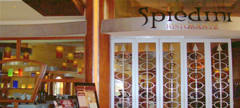

SPEIDINI'S |
||||||||
 Welcome to Spedini's restaurant, where dining meets class. Spedini's offers high quality food at low prices. Head by certified master chef Gustav Mauler, his culinery skill ensures that the person dining will not be disapointed. *Dinner served from 5p.m. until 10p.m. seven days a week. Back to Local's Las Vegas page.
|